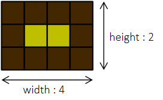
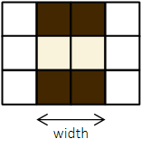
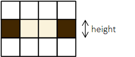
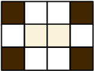

#INFO
분류 : 완전탐색
난이도 : LEVEL2
출처 : https://school.programmers.co.kr/learn/courses/30/lessons/42842
프로그래머스
코드 중심의 개발자 채용. 스택 기반의 포지션 매칭. 프로그래머스의 개발자 맞춤형 프로필을 등록하고, 나와 기술 궁합이 잘 맞는 기업들을 매칭 받으세요.
programmers.co.kr
#SOLVE
갈색 격자의 수 brown과 노란색 격자의 수 yellow 가 매개변수로 주어집니다.
이 때, 카펫의 모양은 갈색 격자는 노란색 격자 테두리 1줄을 둘러 싸는 형태로 만들어 집니다.
이와 같이 만들어진 카펫의 가로(width)와 세로(height)의 크기를 구해야 합니다.

brown = 24, yellow = 24 인 테스트 케이스를 예시로 들어 보도록 하겠습니다.
노란색 격자 24개로 만들어질 수 있는 모든 직사각형의 경우의 수는 다음과 같습니다.
[24, 1] [12, 2] [8, 3] [6, 4] [4, 6] [3, 8] [2, 12] [1, 24]
하지만 문제에서 가로의 길이는 반드시 세로의 길이 보다 크거나 같다는 조건이 주어졌기에 뒤에 4개는 제외합니다.
[24, 1] [12, 2] [8, 3] [6, 4] [4, 6] [3, 8] [2, 12] [1, 24]
앞에서 구한 4개의 직사각형 중 갈색 격자로 테두리 1줄을 만들 경우 갈색 격자의 개수가 24개가 되도록 하는 직사각형을 구해야 합니다.
우선 노란색 격자의 가로면을 채우기 위해선 "노란색 격자 가로의 길이 x 2" 개의 갈색 격자가 필요합니다.

다음으로 노란색 격자의 세로 면을 채우기 위해선 "노란색 격자의 세로의 길이 x 2" 개의 갈색 격자가 필요합니다.

마지막으로 모서리 4개를 채우면 노란색 격자를 갈색 격자로 모두 두를 수 있습니다.

즉, 앞의 과정을 식으로 나타내면 다음과 같습니다.
카펫의 길이 = 노란색 격자 가로 길이 (width) * 2 + 노란색 격자 세로 길이 (height) * 2 + 모서리 격자 (4)
따라서 앞의 수식을 만족하는 직사각형의 가로 세로 길이를 리턴하면 문제를 해결할 수 있습니다.
#CODE
#include <string>
#include <vector>
using namespace std;
vector<int> solution(int brown, int yellow) {
vector<int> answer;
vector<int> yellow_width;
vector<int> yellow_height;
int n = yellow;
for(int i = yellow; i > 0 ; i--){
if(i < yellow / i) break;
if(yellow % i == 0){
yellow_width.push_back(i);
yellow_height.push_back(yellow/i);
}
}
for(int i = 0; i < yellow_width.size(); ++i){
if(yellow_width[i] * 2 + yellow_height[i] * 2 + 4 == brown){
answer.push_back(yellow_width[i] + 2);
answer.push_back(yellow_height[i] + 2);
}
}
return answer;
}